installing hdp 2.2 with ambari 2.0 (moving to the amazon cloud)
2015-06-30 · Lester Martin
UPDATE: Please note the warning at the bottom of post of inability to consistently start/stop HDP via Ambari on this test cluster which has since been decommissioned. There is still tons of good AWS/EC2 information in this post, but as of right now I can not fully guarantee I've provided any/n/everything needed to be completely successful.
This is a sister post to installing hdp 2.2 with ambari 2.0 (moving to the azure cloud), but this time using AWS' EC2 IaaS servers. Just like with Azure having options such as HDInsight, AWS offers EMR for an easy to deploy Hadoop option. This post is focused on using another Cloud provider's IaaS offering to help someone who is planning on deploying the full HDP stack (in the cloud or on-prem), so I'll focus on using AWS' EC2 offering.
Like with the Azure cluster build-out, I'm going to violate my own a robust set of hadoop master nodes (it is hard to swing it with two machines) advice and create a cluster across three nodes with all three being masters AND workers. I repeat, this approach is NOT what I'd recommend for any "real" cluster. I am mainly thinking of the costs I'm about to incur and this setup will still provide much, much more storage & compute abilities than I could ever get running a cluster VirtualBox VMs on my mac. That out of the way, let's get rolling!
First up is to log into https://aws.amazon.com/. If you don't have an account already, check to see if Amazon is offering some free services (hey, nothing wrong with getting something for free!). Once logged in, go to the EC2 Dashboard; one way to get there from the main AWS page is to select Services >> EC2. You should see something like the following.
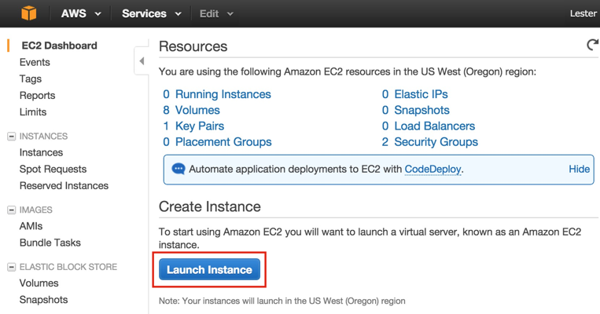
Let's run some CentOS 6.x servers since HDP 2.2 supported OS list does not cover CentOS 7. To get started, click on the Launch Instance button above. Then select AWS Marketplace and type in "CentOS 6" in the search box and press <Enter>. You can then click the Select button as shown below.
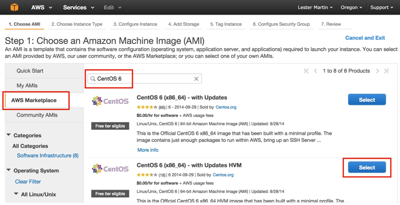
For my cluster, I went with the "d2.xlarge" instance types as it'll give me a few disks per node as well as enough CPU cores and memory to set up a simple cluster.
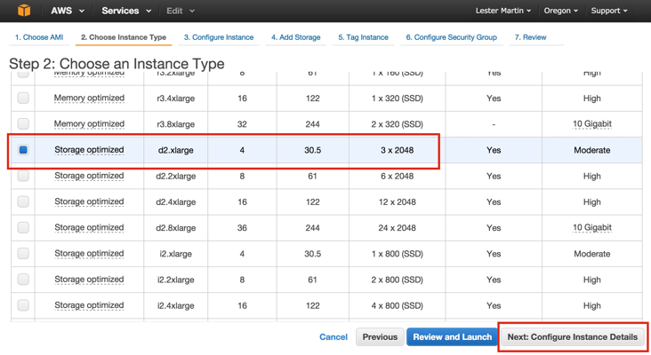
Be sure to click on Next: Configure Instance Details to set up the disks the way we need them to be and NOT on Review and Launch. On the Step 3 screen, I entered "3" in the Number of instances text box (i.e. I want 3 servers) and clicked on Next: Add Storage. On the Step 4 screen, as shown below, toggle the three Type column pulldowns from "Instance Store N" to "EBS", enter "1024" for the Size column, choose "SSD" for the Volume Type and select the Delete on Termination checkbox for all four storage devices before clicking on Next: Tag Instance.
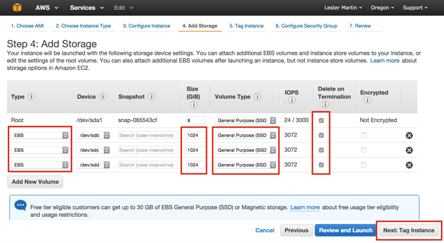
BTW, yes, 8GB is woefully small for a root file system on a host running HDP, but it'll do for the exercise of installing HDP. Visit these instructions for how to change it after creation. On the Step 5 screen, just select Next: Configure Security Group. On Step 6, select the "Create a new security group" radio button with the Assign a security group label and add something like "ec2testSecurityGroup" to Security group name before ignoring the IP address warning and clicking on Review and Launch.
After you perform a quick review on Step 7, click on the Launch button at the bottom of this screen. You'll then get prompted with the following lightbox where you can use a .pem file that you created before or build a new one. I chose to create a new one called "ec2test".
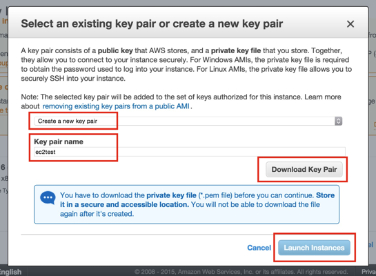
As indicated above, be sure to click on Download Key Pair and save this file as you'll need it later to SSH to the boxes. Then you can click on Launch Instances. You will then get some help finding these instances, but to help you find them later just use the Services >> EC2 navigation approach presented earlier. You should now see a 3 Running Instances link near the top of the page and clicking on that should show you something like the following (I went ahead and added some friendly identifies in the Name column, too).
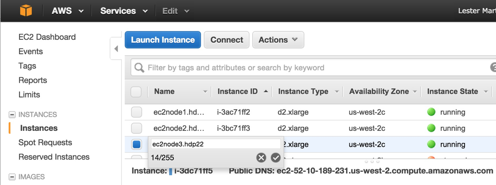
Now we should log into the boxes and make sure they are running. On the same screen as shown above, select the first instance ("ec2node2.hdp22" in my example) and click on the Connect button which will pop-up another lightbox telling you how to connect. Here's that in action on my mac.
After you check all three boxes, it is time to setup the three 1TB drives we identified earlier for each node. The following is the play-by-play steps called out in the To make a volume available steps from the Add a Volume to Your Instance help page.
Then Step 7 from the Making an Amazon EBS Volume Available for Use tells you how to correctly edit the /etc/fstab file so these file systems will be mounted at boot time. The following shows the format of what the three additional rows added to the end of the file look like.
Do all of these file system activities to all three hosts. Once done, issue a shutdown -r now on all nodes and then SSH to them when they have restarted and make sure the df -h output shows all three of the /grid file systems being mounted.
We're just about ready to start installing HDP itself, but we need to think about the hostnames and their IP resolutions. We get new IP addresses after we shut these VMs down. In fact, we even get a new hostname as the private IP address is baked into it. Fear not, we can use the instructions at Changing the Hostname of Your Linux Instance to call our boxes ec2node1.hdp22, ec2node2.hdp22 and ec2node3.hdp22. The following, taken from the "... without a public DNS name" of that last link, are the commands I ran for the first node; ec2node1.hpd22.
HW10653:Amazon lmartin$ ssh -i ec2test.pem root@52.11.30.44
Warning: Permanently added '52.11.30.44' (RSA) to the list of known hosts.
Last login: Tue Jun 30 04:46:55 2015 from 12.48.56.194
[root@ip-172-31-7-169 ~]# cp /etc/sysconfig/network ~/network.bak
[root@ip-172-31-7-169 ~]# vi /etc/sysconfig/network
[root@ip-172-31-7-169 ~]# diff ~/network.bak /etc/sysconfig/network
2c2
< HOSTNAME=localhost.localdomain
---
> HOSTNAME=ec2node1.hdp22
[root@ip-172-31-7-169 ~]# cp /etc/hosts ~/hosts.bak
[root@ip-172-31-7-169 ~]# vi /etc/hosts
[root@ip-172-31-7-169 ~]# diff ~/hosts.bak /etc/hosts
1c1
< 127.0.0.1 localhost localhost.localdomain localhost4 localhost4.localdomain4
---
> 127.0.0.1 ec2node1.hdp22 ec2node1 localhost localhost.localdomain localhost4 localhost4.localdomain4
[root@ip-172-31-7-169 ~]# reboot
Verify this FQDN is returned with, and without, the -f switch.
Now all boxes know who they are, but they don't know where each other are – well, not with our testing .hdp22 domain! For this, we'll just need to create /etc/hosts entries for the (relative) "other two" boxes. As shown below, we will use the public IP addresses as we'll probably want to access something like HiveServer2 or see the Resource Manager UI and this will help. For our testing case, we'll just assume that this provides no overhead compared to using the internal IPs that are available.
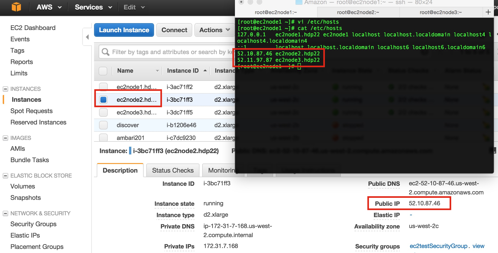
You will have to update /etc/hosts on all three VMs whenever you restart the instances via the EC2 Dashboard.
Now it is time to visit http://docs.hortonworks.com/HDPDocuments/Ambari-2.0.1.0/bk_Installing_HDP_AMB/content/index.html (or the latest version) Ambari install page and start following instructions. I'm not going to use the password-less SSH connectivity, I'll assume these boxes already are staying in sync and do not need NTP installed, and we already addressed the networking. With that, I'm echoing out the steps I did on ALL THREE of the boxes.
[root@ec2node3 ~]# chkconfig iptables off
[root@ec2node3 ~]# /etc/init.d/iptables stop
iptables: Setting chains to policy ACCEPT: filter [ OK ]
iptables: Flushing firewall rules: [ OK ]
iptables: Unloading modules: [ OK ]
[root@ec2node3 ~]# setenforce 0
[root@ec2node3 ~]# cp /etc/profile ~/profile.bak
[root@ec2node3 ~]# vi /etc/profile
[root@ec2node3 ~]# diff ~/profile.bak /etc/profile
78a79,80
> umask 022
>
[root@ec2node3 ~]# vi /etc/profile
[root@ec2node3 ~]# diff ~/profile.bak /etc/profile
78a79
> umask 022
[root@ec2node3 ~]# vi /etc/profile
[root@ec2node3 ~]# diff ~/profile.bak /etc/profile
78a79,80
> # add the following as last line
> umask 022
[root@ec2node1 ~]# yum install wget
Installed:
wget.x86_64 0:1.12-5.el6_6.1
Complete!
[root@ec2node3 ~]# wget -nv http://public-repo-1.hortonworks.com/ambari/centos6/2.x/updates/2.0.1/ambari.repo -O /etc/yum.repos.d/ambari.repo
2015-07-01 03:14:29 URL:http://public-repo-1.hortonworks.com/ambari/centos6/2.x/updates/2.0.1/ambari.repo [252/252] -> "/etc/yum.repos.d/ambari.repo" [1]
[root@ec2node1 ~]# yum repolist
Updates-ambari-2.0.1 | 2.9 kB 00:00
Updates-ambari-2.0.1/primary_db | 5.7 kB 00:00
repo id repo name status
Updates-ambari-2.0.1 ambari-2.0.1 - Updates 9
base CentOS-6 - Base 6,518
extras CentOS-6 - Extras 38
updates CentOS-6 - Updates 1,301
repolist: 7,866
Then I want to performed these next steps on the VM I will run Ambari on; ec2node1.hdp22.
[root@ec2node1 ~]# yum install ambari-server
Installed:
ambari-server.noarch 0:2.0.1-45
Dependency Installed:
postgresql.x86_64 0:8.4.20-3.el6_6
postgresql-libs.x86_64 0:8.4.20-3.el6_6
postgresql-server.x86_64 0:8.4.20-3.el6_6
Complete!
[root@ec2node1 ~]# ambari-server setup
Using python /usr/bin/python2.6
Setup ambari-server
WARNING: SELinux is set to 'permissive' mode and temporarily disabled.
OK to continue [y/n] (y)? y
Customize user account for ambari-server daemon [y/n] (n)? n
Checking JDK...
[1] Oracle JDK 1.7
[2] Oracle JDK 1.6
[3] - Custom JDK
==============================================================================
Enter choice (1): 1
Do you accept the Oracle Binary Code License Agreement [y/n] (y)? y
Enter advanced database configuration [y/n] (n)? n
Ambari Server 'setup' completed successfully.
[root@ec2node1 ~]# ambari-server start
Using python /usr/bin/python2.6
Starting ambari-server
Ambari Server running with administrator privileges.
Organizing resource files at /var/lib/ambari-server/resources...
Server PID at: /var/run/ambari-server/ambari-server.pid
Server out at: /var/log/ambari-server/ambari-server.out
Server log at: /var/log/ambari-server/ambari-server.log
Waiting for server start....................
Ambari Server 'start' completed successfully.
[root@ec2node1 ~]# ambari-server status
Using python /usr/bin/python2.6
Ambari-server status
Ambari Server running
Found Ambari Server PID: 2351 at: /var/run/ambari-server/ambari-server.pid
Awesome, we got Ambari server installed & started. Let's go ahead and do a tiny bit more prep work and get the Ambari agent running on ALL THREE hosts; including the Ambari server we just finished working on.
[root@ec2node3 ~]# yum install ambari-agent
Installed:
ambari-agent.x86_64 0:2.0.1-45
Complete!
[root@ec2node3 ~]# cp /etc/ambari-agent/conf/ambari-agent.ini ~/ambari-agent.ini.bak
[root@ec2node3 ~]# vi /etc/ambari-agent/conf/ambari-agent.ini
[root@ec2node3 ~]# diff ~/ambari-agent.ini.bak /etc/ambari-agent/conf/ambari-agent.ini
16c16
< hostname=localhost
---
> hostname=ec2node1.hdp22
[root@ec2node3 ambari-agent]# ambari-agent start
Verifying Python version compatibility...
Using python /usr/bin/python2.6
Checking for previously running Ambari Agent...
Starting ambari-agent
Verifying ambari-agent process status...
Ambari Agent successfully started
Agent PID at: /var/run/ambari-agent/ambari-agent.pid
Agent out at: /var/log/ambari-agent/ambari-agent.out
Agent log at: /var/log/ambari-agent/ambari-agent.log
The screenshot above shows you three ways to ultimately get to the edit page for this Security Group. Once you get there, highlight the Security Group and then select Actions >> Edit inbound rules which surfaces the lightbox below. You can click on Add Rule to create the first one highlighted below for Ambari's 8080 needs. The other three can also be done now as they will be needed later to ensure the Ambari agents can talk to the Ambari server.
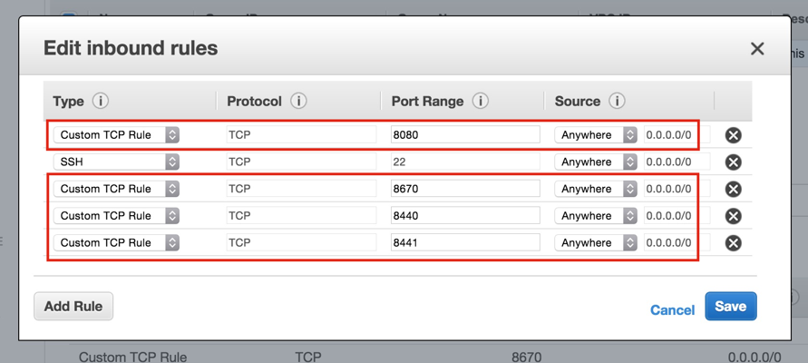
Now, you should be able to pull up the Ambari UI login screen.
When you get to the screen below, remember to use the FQDN values we setup as the hostnames. Also, select the "Perform manual registration ..." option and dismiss the warning as we already "... manually install(ed) and start(ed) the Ambari Agent on each host in order for the wizard to perform the necessary configurations and software installs".
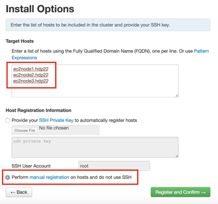
Once you click on Register and Confirm, and like with installing hdp 2.2 with ambari 2.0 (moving to the azure cloud), you will get hit with waning about the ntpd service not running. You can ignore it since it clearly looks like these EC2 instances are in lock-step on time sync. You will also be warned that Transparent Huge Pages (THP) is enabled and just ignored it because, well frankly just because this is still just a test cluster and we need to keep moving forward to wrap up the install. On the Choose Services wizard step, I deselected HBase, Sqoop, Falcon, Storm, Flume, Knox and Kafka (left in Spark – dismiss the erroneous warning pop-up) as just want to be able to still have enough resources on these multipurpose master/worker nodes. I spread out the masters servers as shown below.
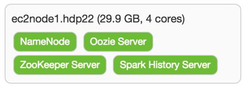
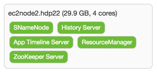
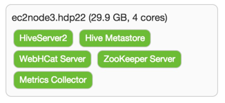
With the (again, not recommended!) strategy of making each node a master and a worker, I simply checked all boxes on the Assign Slaves and Clients screen. As usual, there are some things that have to be addressed on the Customize Services screen. For the Hive and Oozietabs you are required for selecting a password for each of these components. There are some other changes that need to be made. For those properties than can (and should!) support multiple directories, Ambari tries to help out. In most cases it adds the desired /grid/[1-3] mount points. The following table identifies the properties that need some attention prior to moving forward.
Tab
Section
Property
Action
Notes
HDFS
NameNode
NameNode directories
Replace all with /hadoop/hdfs/namenode
Not ideal, but we'll probable reconfigure to HA NN later
NameNode Java heap size
Reduce to 2048
The much larger suggested value was a good starter place, but Ambari was imagining this node would be primarily focused on running the NameNode, but just need to be mindful this VM only has about 30GB of memory
NameNode new generation size
Reduce to 512
Keeping inline with heap size
NameNode maximum new generation size
Reduce to 512
Same as previous
Secondary NameNode
SecondaryNameNode Checkpoint directories
Trim down to just /hadoop/hdfs/namesecondary
Again, not ideal, but it'll get us going for now
DataNode
DataNode volumes failure toleration
Increase to 1
Allow one of the 3 drives on each worker to be unavailable and still serve as a DN
YARN
Application Timeline Server
yarn.timeline-service.leveldb-timeline-store.path
Trim down to just /hadoop/yarn/timeline
Tez
General
tez.am.resource.memory.mb
Reduce to 2048
ZooKeeper
ZooKeeper Server
ZooKeeper directory
Trim down to just /hadoop/zookeeper
When I finally moved passed this screen, I was presented with some warnings on a few of the changes above all focused on memory. With this primarily being a cluster build-out activity this should not be a problem for the kinds of limited workloads I'll be running on this cluster.
As the obligatory Install, Start and Test wizard wrapped up, I was blasted with orange bars of pain. I drilled into the warnings and then it hit me that all the ports listed on http://docs.hortonworks.com/HDPDocuments/HDP2/HDP-2.2.6/bk_HDP_Reference_Guide/content/reference_chap2.html simply were being blocked thus preventing many things from being started up, or even more likely, from being fully registered to Ambari Metrics. I ended up making the following additional inbound port rules.
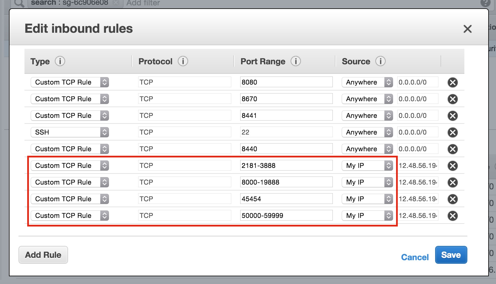
The "My IP" Source option (it automatically manages the IP column) seems to do the trick from locking out general public access, but you will still have to open up any UI or master process ports that you need to hit from outside of these EC2 instances. After I issued a Stop All and then Start All I was (finally) able to pull up Ambari.
The intention was to show an Ambari screenshot with all services operational, but after I did a few more stop/start cycles I had trouble restoring full service.